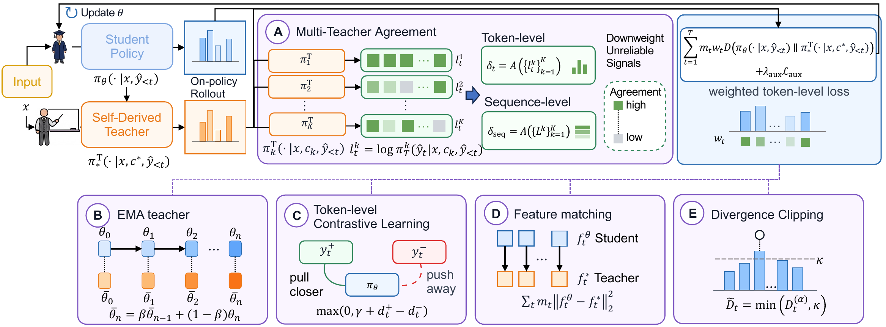
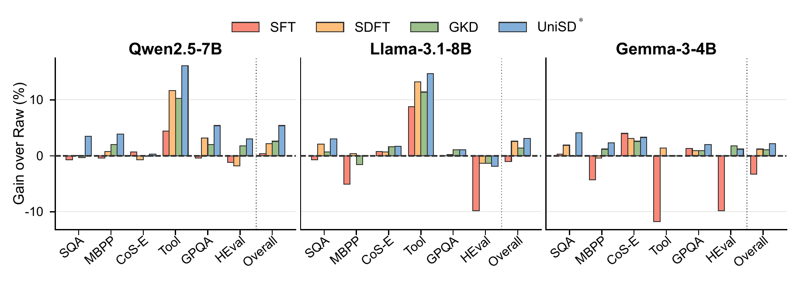
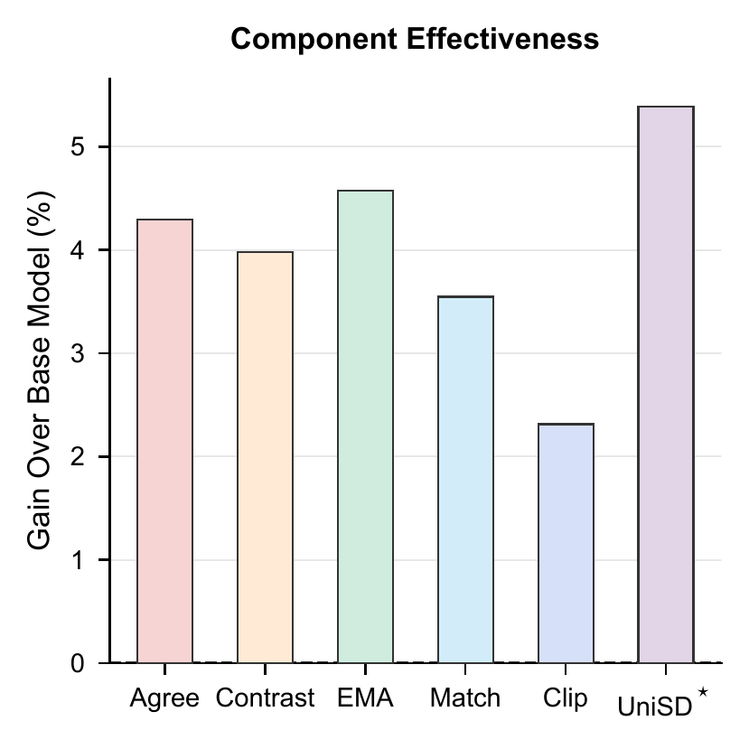
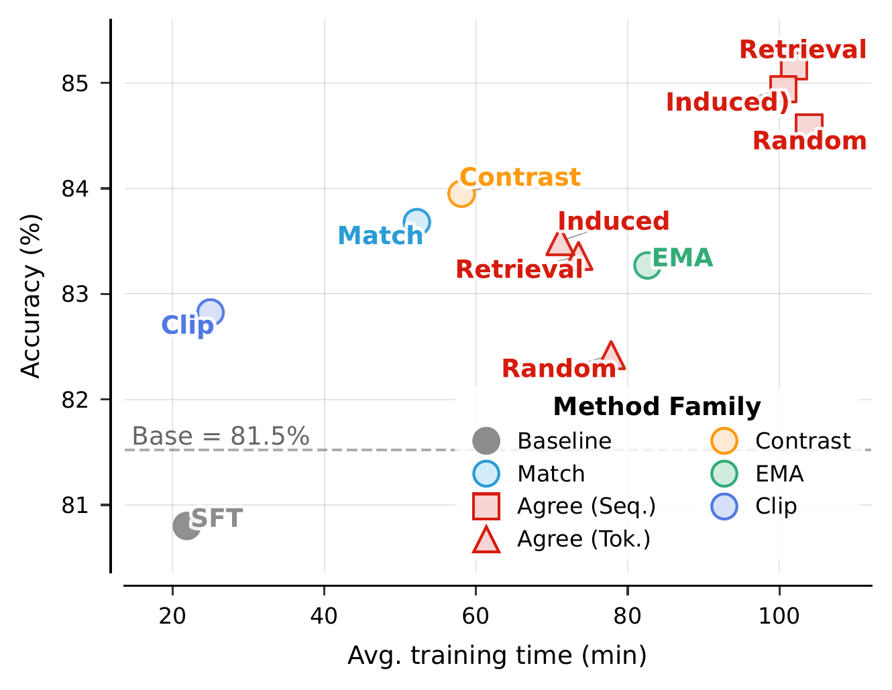
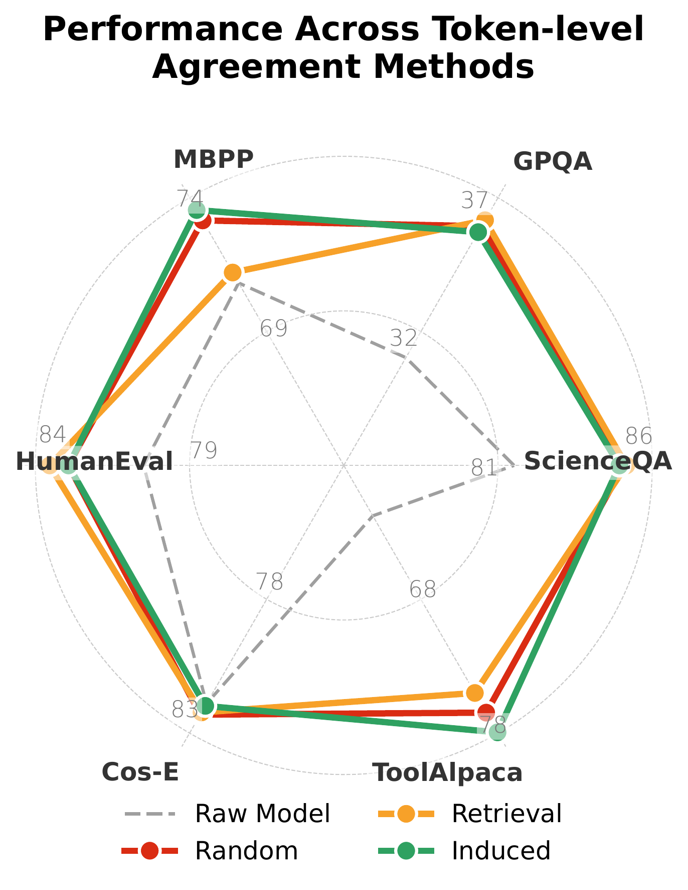
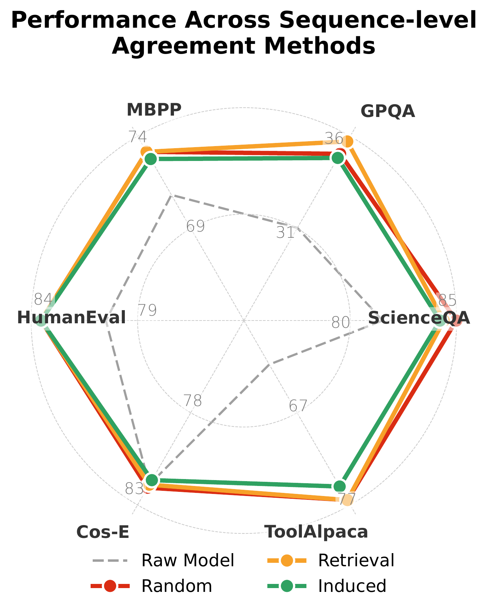
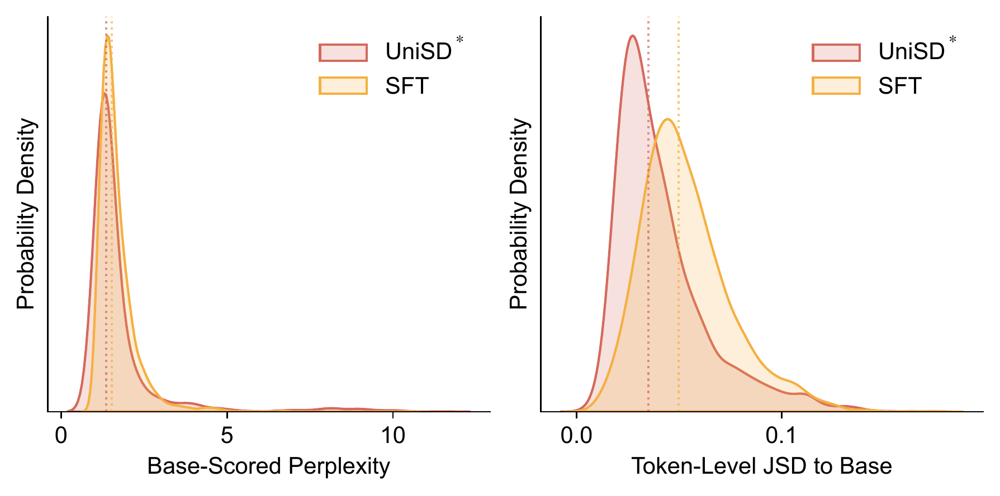

Self-distillation (SD) offers a promising path for adapting large language models (LLMs) without relying on stronger external teachers. However, SD in autoregressive LLMs remains challenging because self-generated trajectories are free-form, correctness is task-dependent, and plausible rationales can still provide unstable or unreliable supervision. Existing methods mainly examine isolated design choices, leaving their effectiveness, roles, and interactions unclear.
We propose UniSD, a Unified framework to systematically study Self-Distillation. UniSD integrates complementary mechanisms that address supervision reliability, representation alignment, and training stability, including multi-teacher agreement, EMA teacher stabilization, token-level contrastive learning, feature matching, and divergence clipping.
Across six benchmarks and six models from three families, UniSD reveals when self-distillation improves over static imitation, which components drive the gains, and how these components interact across tasks. Guided by these insights, we construct UniSD*, an integrated pipeline that combines complementary components and improves over the base model by +5.4 and over the strongest baseline by +2.8, highlighting self-distillation as a practical and steerable approach for efficient LLM adaptation without stronger external teachers.
Adapting LLMs without stronger external teachers is desirable but unreliable. Three open challenges have so far prevented a coherent picture of how self-distillation should work.
LLM outputs are free-form trajectories rather than fixed targets. Multiple valid answers exist; each prefix changes the conditioning state, making correctness assessment task-dependent.
On-policy trajectories expose the model to its own errors. The teacher signal evolves with the student, and transient mistakes or overconfident predictions can be reinforced over time.
Existing self-distillation methods study mechanisms in isolation. It is unclear which factors drive improvement, how they interact, and when each component is actually beneficial.
UniSD casts self-distillation as a reliability-aware self-correction process over on-policy trajectories. The student first attempts a completion, then learns through comparison and supervision across multiple teacher views — weighting reliable signals and consolidating the resulting knowledge.

UniSD* chains the complementary mechanisms identified in our analysis into a single training pipeline that achieves the strongest overall performance across all six benchmarks.
The first extensible framework that organizes self-distillation in autoregressive LLMs along three axes — supervision reliability, representation alignment, and training stability.
Extensive evaluation across six benchmarks and six models from three families reveals which components drive gains and how they interact across robustness, transfer, and retention.
Guided by the analysis, UniSD* integrates complementary components to achieve the strongest overall performance, beating the base model by +5.4 and the strongest baseline by +2.8.
Average accuracy across six benchmarks (Qwen2.5-7B-Instruct base). UniSD* outperforms strong distillation baselines while preserving the base model's distribution.
UniSD* transfers cleanly between model families: every backbone we tested gains overall accuracy without family-specific tuning.

Each axis contributes in distinct ways. Multi-teacher agreement and EMA stabilization deliver the largest individual jumps, while contrastive learning is the most uniformly beneficial. Divergence clipping is the cheapest, and feature matching shines when combined with output-level alignment.


UniSD* raises task accuracy while staying close to the base model's behavior. It achieves lower JSD than SFT on 70.3% of examples and higher base-model log-probability on 60.6% — a clear improvement-with-retention profile.



@article{jin2026unisd,
title={UniSD: Towards a Unified Self-Distillation Framework for Large Language Models},
author={Jin, Yiqiao and Wang, Yiyang and Fu, Lucheng and Xiao, Yijia and Luo, Yinyi and Liu, Haoxin and Prakash, B Aditya and Hester, Josiah and Wang, Jindong and Kumar, Srijan},
journal={arXiv preprint arXiv:2605.06597},
year={2026}
}